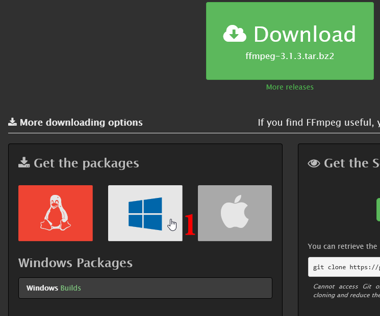
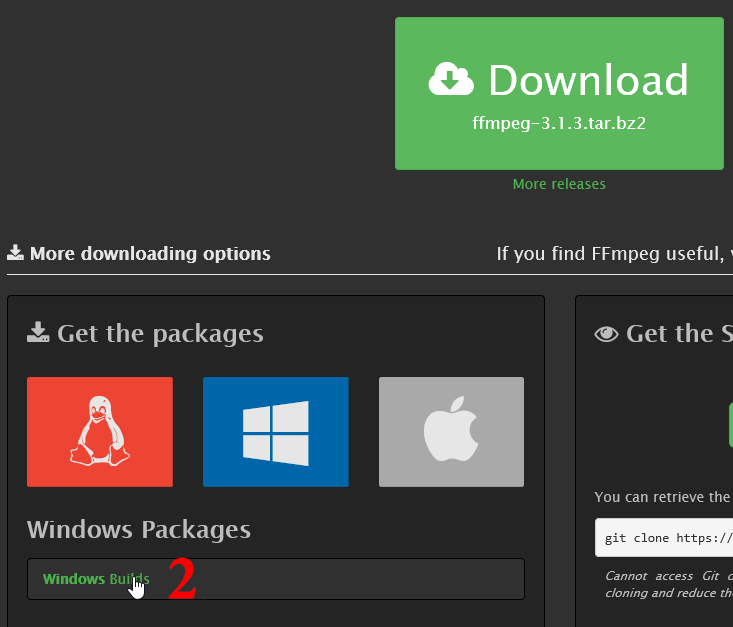
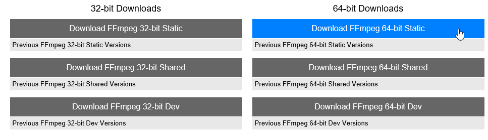
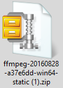
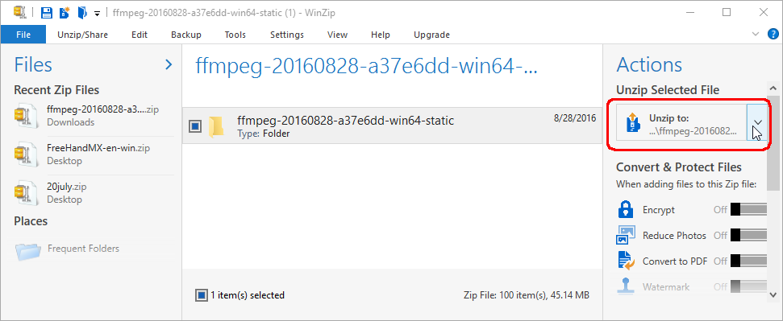
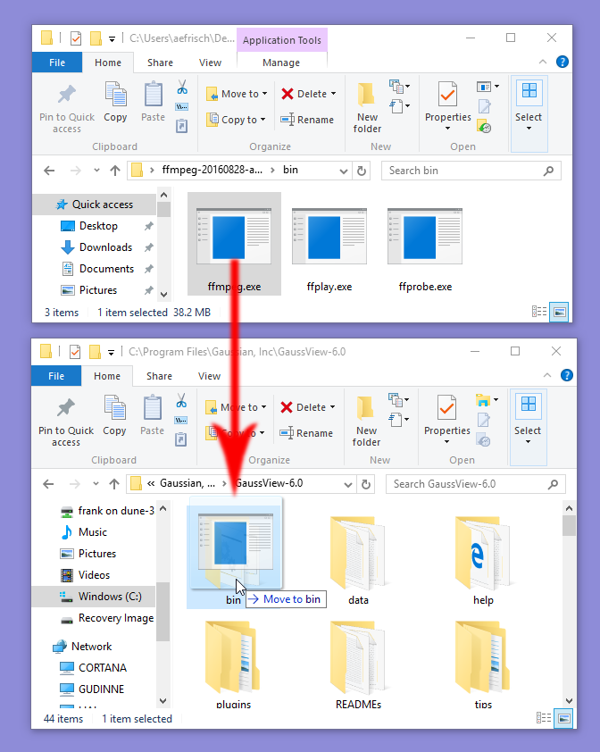
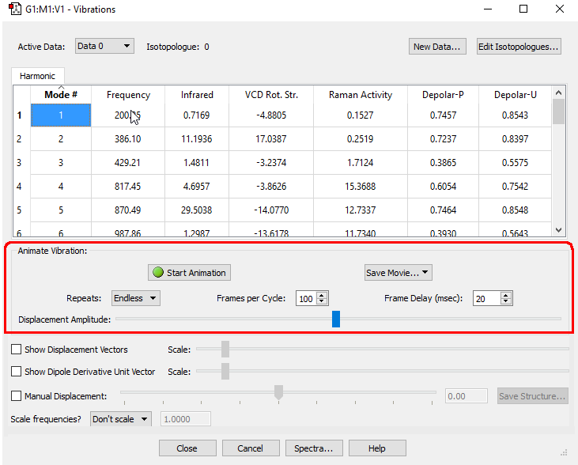
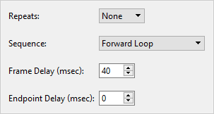
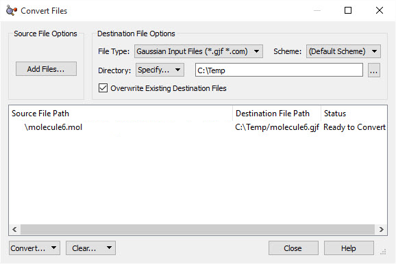

GaussView 6：动画与电影（p.207–213）¶
初始设置、简正振动动画、多视图动画、导出电影
原文件：
../gview6官方说明书.md（全量单文件存档）｜图片目录：../imgs/
如何操作：保存影片文件¶
本页介绍如何使用 GaussView 的保存影片（Save Movie）功能保存影片。
初始设置¶
为了使用该功能创建 MP4 影片，您必须先下载并安装一个程序，以便 GaussView 能将影片文件保存到您的计算机。该程序名为 FFmpeg，可从 https://ffmpeg.org/ 下载。
在本例中，我们将在 Windows 计算机上安装 FFmpeg，其他操作系统的安装过程与此类似。
首先，打开 FFmpeg 网站，点击 Windows 图标（下图中标注为 1）。
下方会出现一个选项，显示 Windows Builds，我们点击该选项（下图中标注为 2）。

随后会出现一个新窗口，进入各种 FFmpeg 程序的下载页面。在本例中我们使用的是 64 位 Windows 操作系统，因此下载 64 位 Static（静态）版本的 FFmpeg。一般来说，我们建议在所有平台上都下载该程序的静态（Static）版本。
下载完成后，打开文件所在位置，该文件为压缩的 zip 格式。
打开该压缩文件以解压其中的文件。



我们需要的文件是 ffmpeg.exe。要安装它，需要进入 GaussView 6 目录，找到 bin 文件夹。将解压后文件中的 ffmpeg.exe 可执行文件拖到 GaussView 6 的 bin 文件夹中。

将该可执行文件复制到 GaussView 后，安装过程即完成。
创建简正振动动画影片¶
打开您想要保存影片的分子的检查点文件。进入结果（Results）=>振动（Vibrations）菜单，将出现如下图所示的在 GaussView 中开始动画和保存影片（Save Movie）的选项。请注意，当视图窗口中正在显示动画时，无法使用 GaussView 保存影片。

使用该菜单，可以在 GaussView 窗口中启动和停止动画，以便在保存视频之前进行预览。在开始动画（Start Animation）和保存影片（Save Movie...）按钮下方是可以用来修改影片设置的选项：
-
重复次数（Repeats:）按钮控制 GaussView 和视频中的动画是否重复以及重复的次数。
-
每周期帧数（Frames per Cycle:）按钮决定影片每个周期中包含多少个独立的帧。
-
帧延迟（Frame Delay (msec):）按钮决定每一帧显示多长时间（以毫秒为单位）后才显示下一帧。
-
位移幅度（Displacement Amplitude:）滑块决定振动显示的剧烈程度。向左拖动会使振动更细微，向右移动则会使振动更明显。
在这些控件下方是可以修改动画附带显示信息的选项。您可以使用相应的复选框照常启用位移矢量和/或偶极导数单位矢量，并用相邻的滑块控制其长度。位移幅度（Displacement Amplitude）滑块照常控制动画过程中原子核运动的幅度。
您可以通过调节这些滑块并点击开始动画（Start Animation）来预览视频。要保存影片，请选择保存影片（Save Movie...）菜单。从该下拉菜单中选择保存影片文件（Save Movie File...）按钮。GaussView 将打开一个对话框，您可以在其中选择影片文件的保存位置。保存类型（Save as type:）字段默认为将影片保存为 .GIF 文件。通常应选择 MPEG-4 Movie File (*.mp4)，然后保存文件。GaussView 随后将使用常规的保存文件对话框保存该文件。
将多视图分子组保存为影片¶
任何包含多个视图的分子组都可以使用视图窗口左上角的绿色按钮制作动画。绿色按钮右侧的向下箭头提供用于修改动画特性的选项。

在这里，您可以使用重复次数（Repeats:）按钮控制动画是否重复以及重复的次数，使用帧延迟（Frame Delay (msec):）按钮控制每一帧显示的延迟时间（以毫秒为单位），使用端点延迟（Endpoint Delay (msec):）按钮控制动画循环之间的延迟时间。播放顺序（Sequence:）按钮用于向前、向后或组合播放动画。
要保存影片，可以选择文件（File）=>保存影片（Save Movie），或点击工具栏中的保存影片（Save Movie）按钮。然后从该下拉菜单中选择保存影片文件（Save Movie File...）按钮。GaussView 将打开一个对话框，您可以在其中选择影片文件的保存位置。保存类型（Save as type:）字段默认为将影片保存为 .GIF 文件。一般来说，您应选择 MPEG-4 Movie File (*.mp4)，然后保存文件。GaussView 随后将使用常规的保存文件对话框保存该文件。

转换文件¶
转换文件（Convert Files）对话框 该对话框用于在不同格式之间转换文件。本对话框支持的文件类型包括 Ampac 输入文件（Ampac Input files）、Gaussian 输入文件（Gaussian Input files）、MDL Mol 文件（MDL Mol files）、MDL SDF 文件（MDL SDF files）、GMMX 输入文件（GMMX Input files）和 Sybyl Mol2 文件（Sybyl Mol2 files）。
添加文件（Add Files）按钮将打开操作系统的文件打开对话框，并进入上次打开文件的目录。该对话框用于指定要转换的文件。添加后，这些文件会显示在对话框底部的文件列表中。
文件类型（File Type）菜单显示 GaussView 可以转换生成的文件类型。选择其中一种类型，即可将所有指定文件转换为该文件类型。
方案（Scheme）菜单允许您指定创建文件时是否使用计算方案。只有在选择 Ampac Input File 或 Gaussian Input File 时才会出现该选项。
目录（Directory）菜单允许您选择 GaussView 保存转换后文件的目录。默认情况下，GaussView 会将文件保存在输入文件的源目录中。
覆盖已有的目标文件（Overwrite Existing Destination Files）复选框指定 GaussView 是否覆盖目标目录中同名的文件。
转换（Convert）菜单允许您转换上面文件列表中高亮显示的文件/所有文件（取决于您选择的条目）。
清除（Clear）菜单允许您移除上面文件列表中的文件。
关闭（Close）按钮将退出转换文件（Convert Files）对话框。
